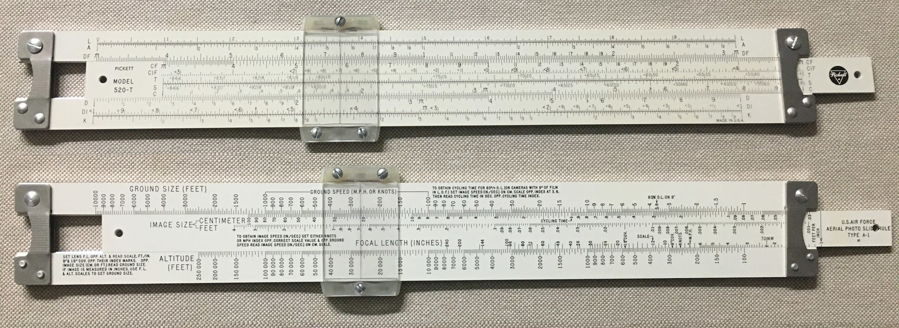
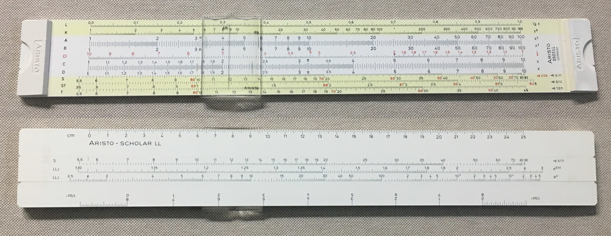
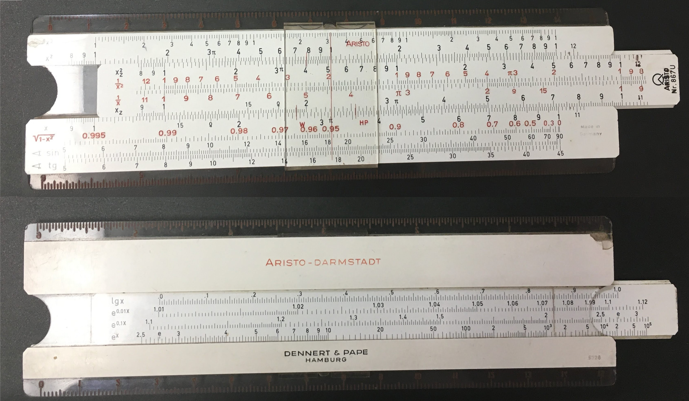
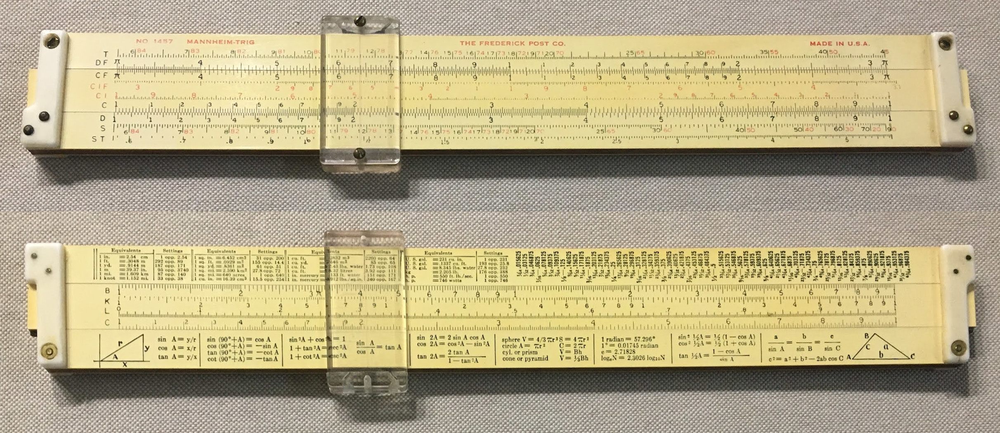
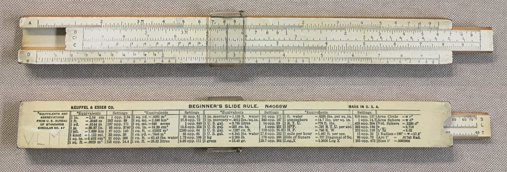
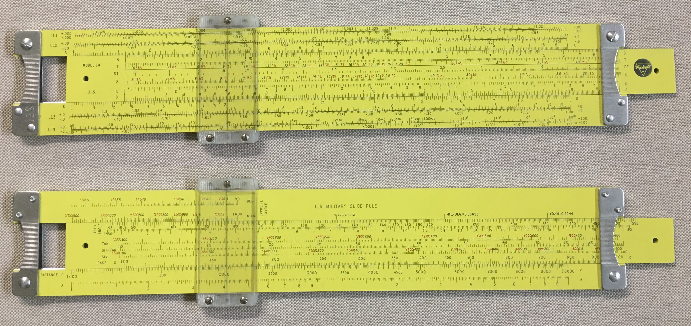
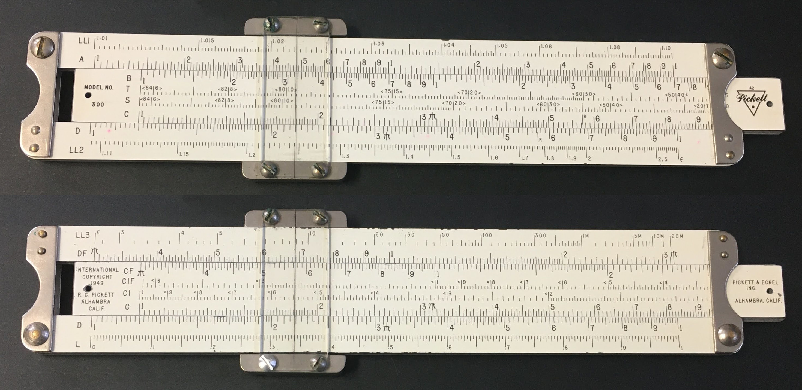

My Slide Rules
Table of Contents
In Order of Acquisition
Wish List
All photos ©2022 A. E. Rinehart unless otherwise noted.
Concise Model CTCS-552
Concise Page on ISRM
This was in a box of stuff Dad said I could have if I was interested. There were also some James Bond novels and a little pocket tool set.
I thought the design of the scales was interesting, with the neat numbers and ticks, and the index indicators on C and D. It seemed clean and purposeful.
The reference card with all of its conversion factors and tables, the table of elements, and rulers were powerful tools to my little Star Trek addled mind.
I played with it like a toy and left it exposed to sunlight in a window sill. If I remember correctly, the sunlight is what hurt it worst.
When Dad visited in December 2021, I showed him my collection and told him I got this Concise from him. He said he didn't remember it. In fact, he said the slide rule he used was a yellow pocket-size Pickett! He said he liked Picketts because they were “built like tanks” and did anyone else even make slide rules? He forgot which model he had, though.
From Dad, 1976?
Scales: 4in || D ( C, CI, L, A, K) || 10cm
Table of the Elements and Temperature Conversion Chart on back
Insert ©1966
Length, Area, Weight, Volume, Decimal Equivalents, Velocity, Gas Constants, Flow Rate, Energy, Pressure, Useful Constants
Includes manual
Includes red vinyl case
Imprinted "Sturgis Equipment Company"
Poor condition, but complete and functional. Taped together.
I played with it like a toy and left it exposed to sunlight in a window sill. If I remember correctly, the sunlight is what hurt it worst.
Return to Top
Pickett 902 Simplex Trig
My Concise 552 made me curious about slide rules, so I searched for more information about them. I found ISRM and some other info about slide rules. I mentioned all of this to Lys, and she looked on Ebay and found a lot of two slide rules: this Pickett 902, and the Roos SR-109 below.
Lys got me this!
Lot of two (with Roos SR-109 below) for ~$20
~2010?
Pickett Metal Slide Rules Chronology Pickett Metal Slide Rules - A Brief Update Manufactured 1955 - 1957
Aluminum
Shiny edges, not corroded or dark
1953 or Later: Transition from Magnesium to Aluminum occurred in 1953 (?)
“Period 3”
Logo Style 3
Stamped Aluminum Posts
“Smooth Stamped Posts Contoured to Finger Tip”
Plain Flat Lens
Machined Metal Cursor Bars
Grooved Rails
Grooved Slide
Slide Tension Springs
Slide Reverse has "41" artwork mark, no copyright mark.
Scales
Front: K, A [B, T, S, C] D, L
Rear: Instructions
Good condition
Return to Top
Roos Company No. SR-109
Lys got me this!
Lot of two (with Pickett 902-T above) for ~$20
~2010?
Manufactured 1941 - 1946, probably 1945
Made by The Roos Company prior to Charvoz-Roos merger (1946)
Material: Wood stock with plastic laminate, plastic end pieces
Scales:
Front Scale: T, DF [ CF, CIF, CI, C ] D, S, ST
Back Scale: Conversions [ B, K, L, C ] Trig Identities
Includes "MANNHEIM-TRIG" manual
Manual © 1945
Manual is from Acu-Rule
Fair condition. Plastic on slide delaminating from wood slightly at ends.
Includes leatherette case
No markings on case
This seems to be the same size and design as the case that came with the Post 1457 , except with smooth leather
Flap torn off
When I got it, the flap wasn't torn off yet, but it was close
Written inside flap:
"Mrs. J. S. Payte 322 Dennis St. Nacodoches Texas"
Compare to Frederick Post 1457 Mannheim Trig ISRM S076
Also compare to Frederick Post 1457 below.
Return to Top
Pickett Model 700 A-2
"U. S. AIR FORCE AERIAL PHOTO SLIDE RULE TYPE A-2"
Purchased June 12, 2020
Manual
Pickett Metal Slide Rules Chronology Pickett Metal Slide Rules - A Brief Update Manufactured Early 1950s
Aluminum
Shiny edges, not corroded or dark
1953 or Later: Transition from Magnesium to Aluminum occurred in 1953 (?)
Documentation states that Aerial Photo Slide Rule is "Front" and Slide Rule Scales are "Reverse"
Scales:
Front: Ground Size (Feet), Image Size (CM, FT), Focal Length (Inches), Altitude (Feet)
Rear: L, A DF [ CF, CIF, T, S, C ] D, DI, K
Logo Style 3
Stamped Aluminum Posts
"Smooth Stamped Posts Contoured to Finger Tip"
Plain Flat Lens
Machined Metal Cursor Bars
Grooved Rails
Male Slide
No Slide Tension Springs
Includes Case with Conversions and Formulas and pocket clip
Good condition.
Return to Top
Pickett Model 520 A-1
"U. S. AIR FORCE AERIAL PHOTO SLIDE RULE TYPE A-1"

Purchased June 25, 2020
Manual Pickett Metal Slide Rules Chronology Pickett Metal Slide Rules - A Brief Update Manufactured 1962 - 1966
Aluminum
Shiny edges, not corroded or dark
Documentation states that Aerial Photo Slide Rule is "Front" and Slide Rule Scales are "Reverse"
Scales:
Front: Ground Size (Feet), Image Size (CM, FT), Focal Length (Inches), Altitude (Feet)
Rear: L, A DF [ CF, CIF, T, S, C ] D, DI, K
Logo Style 4
No Artwork Mark
No Copyright Mark
Stamped Aluminum Posts
"Grooved Stamped Posts Contoured to Finger Tip"
Grooved Convex Lens
Nylon Cursor Bars
No Grooves in Rails for Cursor
Grooved Slide
Slide Tension Springs
Slide Aerial Photo side has "57" artwork mark, no copyright mark.
Includes Original Box
Includes Case with Conversions and Formulas
Leather case with plastic insert.
Appears that the case used to have a "DYMO Embosser" label applied. Cannot read what it said.
Includes Instruction Manual
Includes "Slide Rule Guarantee Registration Card"
Excellent Condition
Return to Top
Aristo 0903LL Scholar

Purchased July 8, 2020
Ebay
$19.25 Shipped
Arrived July 12, 2020
Manual Scales:
Front: L, K, A [ B, CI, C ] D, S, ST, T
Rear: 25cm [ S, LL2, LL3] 8 inch(bi-directional)
Convex Plastic Cursor
Manufacturing Code "3LR28"
Includes Plastic Box
“Dieter Engel…” written in pencil
Excellent Condition
Return to Top
Aristo 867U Darmstadt

Purchased July 19, 2020
Ebay
$17.12 Shipped
Arrived July 24, 2020
Scales:
Front: K, A [B, BI, CI, C] D, P, S, T
x³, x² [ x², 1/x², 1/x, x ] x, √(1-x²), sin, tg
Top: Transparent Centimeter Scale
Bottom: Transparent Inch Scale
Rear: [L, LL1, LL2, LL3]
[lg x, e^0.01x, e^0.1x, e^x]
Aristo-Darmstadt
Dennert & Pape Hamburg
"5328" Date Code Stamp
Clear back over slide with hairlines at indexes
Plastic Cursor
Includes Leather Case
Worn but functional
Stamped "ARISTO MADE IN GERMANY"
Manufacturing Code Stamp "5328"
Not the later alphanumeric Aristo date code
Oughtred Society Journal Article: DENNERT & PAPE and ARISTO Slide Rules 1872 - 1978
Old enough to have the "circle and angle" symbol at the right end of the scale, Figure 16 in the above article, which supposedly ended in 1952, with "Nr. 867U" catalog number.
1953, Lot 28
Good Condition
Crack in body at left end of K scale
Broken plastic on back
Return to Top
Pickett N4-ES
Manual on ISRM Site …or at least the only one I could find that discusses the TWO Tangent scalesPurchased September 24, 2020
Ebay
$42.70 Shipped
Arrived October 1, 2020
Scales
Front: LL1+.00D/-.00D, LL2+.0D/-.0D, DF/m [ CF/m, TH, SH, Ln, L, CI, C ] D, LL3+.D/-.D, LL4+D./-D.
Rear: ∛ #1, ∛ #2, ∛ #3, DF [ CF, CIF, T1, T2, ST, S Cos, CI, C ] D, DI, √ #1, √ #2
Manufactured 1962 - 1964
Aluminum
Logo Style 4
No Artwork Mark
“MADE IN U.S.A.” under logo like Style 5
Stamped Aluminum Posts
“Grooved Stamped Posts Contoured to Finger Tip”
Dull, not shiny
Grooved Convex Lens
Nylon Cursor Bars
No Grooves in Rails for Cursor
Grooved Slide
Slide Tension Springs
Slide has “PICKETT & ECKEL INC. CHICAGO ILL. U.S.A.”
Pickett moved to California in 1964
Plastic Cursor
Dirty and cloudy. Cleaned up well.
Slightly Yellowed
Includes Leather Case
“FRANK BUSH” stamped inside case flap
There has been a sticker on the front and back of the case, like price tags?
There is still some adhesive remaining from each sticker. Still sticky, so probably recent.
There are scratches on the case where someone removed the stickers. They are not deep scratches.
Good Condition
Dirty, Cleaned up well.
Complete
Operates smoothly
Return to Top
KL-1 Circular Slide Rule
Purchased October 7, 2020
Ebay
$42.68 Shipped
Shipping from Uzbekistan (yes, really!)
Arrived October 15, 2020
Came with a post card from Moscow
Scales
Front: A, D
Back: DI, S, T
Perhaps more like BI, CI | D, S, T ?
Pink Plastic "Pillbox" Case
Manual
Two Screws on Face, rather than three.
Excellent condition
Translations:
Logarithmic Scale: логарифмическая шкала
Circular: круговой
Calculator: калькулятор
Engineer: инженер
Circular Logarithmic Ruler KL-1: круговая логарифмическая линейка КЛ-1
Return to Top
Frederick Post 1457 Mannheim Trig

Purchased October 15, 2020
Ebay
$20.07 Shipped
Arrived October 15, 2020
Same as Roos SR-109
Manufactured 1941 - 1945
Material: Wood stock with plastic laminate, plastic end pieces
Made by The Roos Company prior to Charvoz-Roos merger (1946)
According to ISRM, 1457s made in 1956 had metal end pieces
Scales:
Front Scale: T, DF [ CF, CIF, CI, C ] D, S, ST
Back Scale: Conversions [ B, K, L, C ] Trig Identities
Good condition.
Slide NOT delaminating
Cursor loose, slides too easily. Is spring faulty, or installed incorrectly? Perhaps I can fix it.
Top stator rail not aligned with bottom rail
Includes "Alligator Skin" Leather Case
Compare to Roos SR-109 above.
Return to Top
Sun Hemmi No. 130 System Darmstadt
Purchased November 19, 2020
Ebay
$47.82 Shipped
Shipping from Haifa, Israel
Shipped November 22, 2020
Shipped via Israel Post
Arrived December 3, 2020
Scales:
Front: 27cm || L, K, A [B, CI, C] D, P || S, T
Scales not labeled except for D (SIN) and P (COS)
S and T on front edge as SIN / COS and tg / Ctg
Reverse scales (CI, COS, Ctg, but not P) in Red
Rear: [L, LL1, LL2, LL3]
[lg x, e^0.01x, e^0.1x, e^x]
Back: Conversions
Date Code "OC"
Includes cardboard box/case
"SUN HEMMI Bamboo Slide Rule"
Box does not have ends
Stars drawn on box
Return to Top
Pickett Model 200
Purchased January 11, 2021
Ebay
$17.83 Shipped
Seller accidentally shipped me the wrong slide rule, so he is shipping this one the next day and letting me keep the extra rule !
Arrived January 18, 2021
Pickett Metal Slide Rules Chronology Pickett Metal Slide Rules - A Brief Update Manufactured Early 1953-1955?
Aluminum
Shiny edges, not corroded or dark
Logo Style 3
Stamped Aluminum Posts
"Smooth Stamped Posts Contoured to Finger Tip"
Plain Flat Lens
Machined Metal Cursor Bars
Grooved Rails
Male Slide
No Slide Tension Springs
Scales:
Front: K, A [ B, CI, C ] D, L
Back: Blank [ S, ST, T ] Blank
Includes leather case with pocket clip
Initials “J.C.P.” written below clip
Good condition
Smooth operation
One small crack in each cursor lens
Return to Top
K&E N4058W Beginner’s Slide Rule

Clark McCoy's K&E N4058W Scans Page Sent to me accidentally when I ordered the Pickett Model 200 , so the seller let me keep it!
Manual Includes leather case
Manufactured 1954-1960
One-piece clear plastic cursor
Scales:
Front: A [ B, CI, C ] D, K
Back: Equivalents [ S, L, T ]
Fair condition
Printing at right end of scales is worn
Smooth operation
"V.L.M" written on back
Unusual?
Does not have the "window" on the back of the rule to read the S, L, and T scales.
There is a rounded finger cutout at the right end of the back of the rule, but no window.
Rounded cutout seems irregular. Added by an owner?
Clearly labeled "N4058W" on back. The model without the window that is closest is labeled "4058D"
Emailed Clark McCoy
Same as K&E N4058W on Smithsonian Museum web page
Return to Top
Pickett Model N14 ES Military Ranging

Birthday present from Lys
She got it from Ebay
She gave it to me March 20, 2021
Includes
Cardboard box
"138" written on one side and one end of box
Leather case with slot for instruction slip
"US" embossed in gold on front, partly worn off
"138" writtin inside flap
Plastic instruction slip
Belt loop
Slide Rule Guarantee Registration Card
Rule in original plastic bag
Receipt from "Northeast Technical Institute"
$10.00
October 15, 1975
Pam Betteys
For "Slide Rule #138"
Scales
Front Scale: LL1+/-, LL2+/-, A [ B, T Cot, ST, S Cos, K, C ] D, LL3+/-, LL4+/-
Back Scale: Opposite angle Deg, Deg, Mils, Mils [ Apex angle, Tan CoTan, Sin-Tan, Sin CoSin, Base C ], Distance D, A
Manufactured 1958 -1962
Aluminum
Logo style 4
Stamped Aluminum Posts
"Grooved Stamped Posts Contoured to Finger Tip"
"138" engraved on front left post
Grooved Convex Lens
Extended Nylon Cursor Bars
No Grooves in Rails for Cursor
Grooved Slide
Slide Tension Springs
Like-New condition
Clean and Shiny
Complete
Operates smoothly
Return to Top
Pickett Model 500 Ortho Phase Log Log
Purchased May 18, 2021
Ebay
$21.34
Shipped via USPS
Arrived May 21, 2021
Scales
Front Scale (artwork: G-10): LL0, LL00, A [ B, T, ST, S ] D, K
Back Scale (artwork: H-10): L, LL1, DF [ CF, CIF, CI, C ] D, LL3, LL2
Manufactured 1948-1950
"Period 1"
Magnesium
Edges corroded and dark
Slide and Cursor slide easily and smoothly
Logo Style 1 "P&E"
"U.S.A. COPYRIGHT 1948" on back of slide, left end.
So, Manufactured 1948-1950 ?
Grooved Rails
Male Slide
Stamped Stainless Steel Posts
"Smooth Stamped Posts Contoured to Finger Tip"
Plain Flat Lens
Machined Metal Cursor Bars
Stainless Steel?
Shiny!
Serial Number stamped on top bar: B060316
No Slide Tension Springs
An early version:
Artwork marks G-10 and H-10 (ISRM also shows one with no artwork marks. Is that earlier?)
Heavier serif scale labels
Black dot values on CI scale
No dot, circle, or arrow to indicate descending values on trig scales
Felt slip cover
Return to Top
Pickett Model N200-T Trig
Purchased June 18, 2021
Ebay
$26.69 Shipped
Shipped via USPS
Arrived June 24, 2021
Manufactured 1964-1975
Logo Style 6
Aluminum
Shiny edges, not corroded or dark
Stamped Aluminum Posts
Posts with "Hooked" finger contour
Circular machine marks on posts
Mike Konshak at ISRM told me he thinks the “hooked” posts were an experiment between the square posts and later curved posts. That would mean this rule was manufactured in the middle 1960’s.
Grooved Convex Lens
Nylon Cursor Bars
No Grooves in Rails for Cursor
Grooved Slide
No Slide Tension Springs
Scales:
Front: K, A [ B, CI, C ] D, L
Back: Blank [ S, ST, T, C ] D
Includes leather case with top flap
Pull flap to pull rule out of case
Good condition
Return to Top
Pickett Model 300

Purchased August 4, 2021
CT Auctions; "Caring Transitions" Estate Sale
$100 Shipped, with Pickett Model 300, 600, 1000
Shipped via USPS
Arrived August 17, 2021
Scales
Front Scale(Artwork 42): LL1, A [ B, T cot, S Cos, C ] D, LL2
Trig scales marked with < and >
Back Scale: LL3, DF [ CF, CIF, CI, C ] D, L
Inverse scales marked with <
Manufactured 1950-1953?
Magnesium
Feels lighter than the Model 200 and 700
Edges corroded and dark
Slide and Cursor slide unevenly
"Period 2"
Logo Style 3
Grooved Rails
Male Slide
Stamped Stainless Steel Posts
"Smooth Stamped Posts Contoured to Finger Tip"
Plain Flat Lens
Machined Metal Cursor Bars
Includes leather case without pocket clip
“JIMERSON” stamped on case
Triangle Pickett logo on both sides of case
Return to Top
Pickett Model 600
Purchased August 4, 2021
CT Auctions; "Caring Transitions" Estate Sale
$100 Shipped, with Pickett Model 300, 600, 1000
Shipped via USPS
Arrived August 17, 2021
Scales
Front Scale(Artwork 81): LL1+, LL1-, A [ B, T, ST, S, T, C ] D, DI, K
Back Scale: LL2+, LL2-, DF [ CF, CIF, CI, L, C ] D, LL3+, LL3-
Descending values on CI, CIF, and trig scales marked with left-pointing arrows
Manufactured 1950-1953?
Magnesium
Feels lighter than the Model 200 and 700
Edges corroded and dark
Slide and Cursor slide unevenly
"Period 2"
Logo Style 3
Grooved Rails
Male Slide
Stamped Aluminum Posts
"Smooth Stamped Posts Contoured to Finger Tip"
Plain Flat Lens
Machined Metal Cursor Bars
Includes leather case with pocket clip
Return to Top
Pickett Model 1000 Ortho-Phase Duplex
Purchased August 4, 2021
CT Auctions; "Caring Transitions" Estate Sale
$100 Shipped, with Pickett Model 300, 600, 1000
Shipped via USPS
Arrived August 17, 2021
Scales
Front Scale(Artwork 26): A [ B, T Cot , ST, S Cos] D, K
Back Scale(Artwork 27): DF [ CF, CIF, CI, C ] D, L
Note the CI scales with the numbers circled
Manufactured 1948-1950
"Period 1"
Magnesium
Edges corroded and dark
Slide and Cursor slide easily and smoothly
"U.S.A. COPYRIGHT 1948" on back of slide, left end.
Logo Style 2
This logo used 1949-1950
So, Manufactured 1949-1950 ?
Grooved Rails
Male Slide
Stamped Stainless Steel Posts
"Smooth Stamped Posts Contoured to Finger Tip"
Plain Flat Lens
Machined Metal Cursor Bars
Stainless Steel?
Shiny!
Serial Number stamped on top bar: A117221
No Slide Tension Springs
This would be the second version:
Artwork marks 26 and 27
Lighter, condensed sans serif scale labels
Circled values on CI scale
No circles or arrows to indicate descending values on trig scales or CIF
The first version had Artwork marks J-10 and K-10, heavier serif scale labels, black dot values on CI scale; compare to my Model 500
Felt slip cover
Includes Manual
“How To Use The Pickett 1000 Ortho-Phase Duplex Slide Rule”
Copyright 1948 Pickett & Eckel, Inc.
Written on cover in pencil:
William H. McLean, Jr. U.S.M.C. U.S. Naval Academy Prep School
Return to Top
Pickett Model 1006 Duplex Trig
Purchased February 13, 2022
Ebay
$42.70 Shipped
Arrived February 22, 2022
Manufactured Mid 1960s
Aluminum
Front of Slide:
Logo Style 4
“MODEL N 1006-ES TRIG”
“MADE IN U.S.A.”
No Artwork Mark
Back of Slide:
“PICKETT ALL-METAL SLIDE RULES”
“PICKETT & ECKEL, INC. CHICAGO, ILL. ©1959”
No Artwork Mark
Stamped Aluminum Posts
Posts with “Hooked” finger contour
Grooved Convex Lens
Nylon Cursor Bars
No Grooves in Rails for Cursor
Grooved Slide
No Slide Tension Springs
Scales:
Front Scale K, A [ B, ST, T, S, C ] D, DI
Back Scale Ln, DF [ CF, CIF, CI, C ] D, L
Descending values on CI, CIF, and trig scales in red with left-pointing arrows
Good condition
Cleaned cursor and sliding surfaces
Aligned top rail to bottom rail
Includes Leather Case with Pocket Clip
Pull Tab to remove rule from case
Pull Tab has Style 6 Logo
Return to Top
Wish List
Pickett Model 100 “Douglas Sky Rule”
Scales:
Front Scale (A side)(Artwork #56): Dynamic Pres., Temp Rise [ Static Pres., Pres. Alt, Density Alt., C ] D, True Mach. TAIS
Back Scale (B side): Impact Pres., Std. Temp., Pres. Alt. [ Temp. Venier, Pres. Alt. ] True Mach No., Dial Airspeed. ] Blank
Return to Top
Pickett Model 400 Business Rule
Scales:
Note: Special C% and R% scales for Cost and Retail mark up. DF & D scale labeled as RF & R.
Front Scale (artwork: 43): K, A [ B, CI, C ] D, L
Back Scale: R%, RF [ CF, Unit, Doz(C%), Gross, C ] R, C%, Gross, Doz(R%), Unit
Return to Top
Concise Model 270
Scales:
Front Scale: L, D ( C, CI, A, K )
Back Scale: DI, D ( S, T1, T2, ST )
Concise Model 271
Scales
Front Scale: L, D ( C, CI, A, K )
Back Scale: DI, D ( S Cos, T1 Cot1, T2 Cot2, ST )
Return to Top
Concise Model 300
Scales
Front Scale: K, A, D ( C, CI, B, L )
Back Scale: LL3, LL2, D ( C, S Cos, T1 Cot1, T2 Cot2, ST )
Return to Top
©2022 A. Eric Rinehart


 Douglas Sky Rule on International Slide Rule Museum
Douglas Sky Rule on International Slide Rule Museum Pickett Model 400 on International Slide Rule Museum
Pickett Model 400 on International Slide Rule Museum Concise 270 on International Slide Rule Museum
Concise 270 on International Slide Rule Museum Concise 271 on International Slide Rule Museum
Concise 271 on International Slide Rule Museum Concise 300 on International Slide Rule Museum
Concise 300 on International Slide Rule Museum{kind=link}